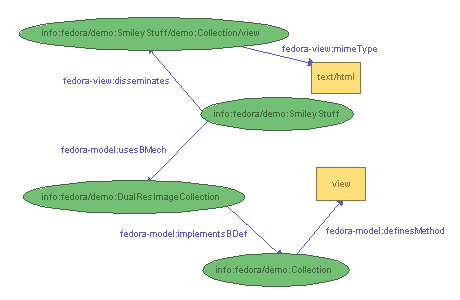

The latest release of Fedora includes the Resource Index, a service which provides the infrastructure for expressing relationships among objects and their components. Examples of relationships between digital objects include well-known management relationships such as the part-whole links between individual chapters and a book, and semantic relationships useful in digital library organization such as those expressed within the Functional Requirements for Bibliographic Records (FRBR).
Fedora expresses relationships by defining a base relationship ontology using RDFS and provides a slot in the digital object abstraction for RDF expression of relationships based on this ontology. Assertions from other ontologies may also be included along with the base Fedora relationships. All relationships are represented as a graph that can be queried using an RDF query language. The query interface to the Resource Index is exposed as a web service, providing a rich information foundation for external services [1].
The Fedora object model can be abstractly viewed as a directed graph, consisting of internal arcs that relate digital object nodes to their dissemination nodes and external arcs between digital objects. The Resource Index is a Fedora service that allows storage and query of this graph.
The Resource Index builds on the RDF primitives build within the semantic web community. Fedora supplies a base relationship ontology (defining a core set of internal and external relationships) that can co-exist with domain-specific relationship ontologies from other namespaces. Each digital object's external relationships to other digital objects are expressing in RDF/XML within a reserved datastream in the respective object. A relationship graph over the digital objects in the repository can then be derived by merging the internal relationships implied by the Fedora object model with the external relationships explicitly stated in their relationship datastreams.
The Fedora base ontology describes such relations and properties as the behavior definition implemented, behavior mechanism used, creation date, state, and mime-type.
The most rudimentary of digital objects as represented in the Resource Index is shown below:
Please note that many configuration changes require a full dump-and-load of the Fedora repository to ensure consistency. For example, turning the Resource Index Module off and on again will result in an inconsistent state, as the Resource Index will know nothing about the digital objects created or modified while the module was not loaded. In general, the only safe configuration changes to make on a running repository are limited to the performance-related pool, buffer and flush parameters. In all cases, configuration changes require a restart of the Fedora server before taking effect.
A utility to manage configuration changes that will not require a full dump- and-load of the repository is planned for the next release of Fedora.
The Resource Index is configured within two sections of fedora.fcfg, module and datastore.
An example of the module configuration within fedora.fcfg:
<module role="fedora.server.resourceIndex.ResourceIndex"
class="fedora.server.resourceIndex.ResourceIndexModule">
<param name="level" value="1"/>
<param name="datastore" value="localKowariTriplestore"/>
</module>An explanation of the parameters and their possible values:
getImage with parameter size,
whose domain is {small, large}).
Because calculating method parameters may result in a
combinatorial explosion of statements in the Resource Index
(depending on the design of a particular repository's
Behavior Definition Objects), this level of indexing must be
explicitly set.
connectorClassName
parameter with a valid Trippi Connector class.
The example datastore configuration below (with the path parameter modified for the installation environment) would provide a local Kowari triplestore that buffers up to 20,000 triples in memory at a time or waits for 5 seconds of buffer inactivity before flushing them to disk. Because writing triples to disk is a relatively expensive operation, the buffer takes advantage of Kowari's bulk update handler to ingest a mass of triples at a time. The performance gain is significant during a bulk ingest of objects. The size or inactivity interval of the buffer may be adjusted according to performance needs and physical memory capacity.
<datastore id="localKowariTriplestore"> <param name="connectorClassName" value="org.trippi.impl.kowari.KowariConnector"/> <param name="remote" value="false"/> <param name="path" value="/opt/fedora/store/resourceIndex"/> <param name="serverName" value="fedora"/> <param name="modelName" value="ri"/> <param name="poolInitialSize" value="3"/> <param name="poolMaxGrowth" value="-1"/> <param name="readOnly" value="false"/> <param name="autoCreate" value="true"/> <param name="autoTextIndex" value="false"/> <param name="memoryBuffer" value="true"/> <param name="autoFlushDormantSeconds" value="5"/> <param name="autoFlushBufferSize" value="20000"/> <param name="bufferSafeCapacity" value="40000"/> <param name="bufferFlushBatchSize" value="20000"/> </datastore>
An explanation of the parameters and their possible values follows. Certain parameters require other parameters, as indicated in the hierarchy below. Optional parameters are also indicated below. As noted previously, many of these parameters, with the exception of the pool, buffer, and flush parameters, cannot be changed on a running repository without a full dump-and-load of the repository.
jdbc:mysql://localhost/mydb
would use the local database named
mydb. For McKoi,
jdbc:mckoi://localhost:9157/
would use the local database at port
9157. For oracle,
jdbc:oracle:thin:@localhost:1521:mydb
would use the thin driver to connect
to the local database named mydb at
port 1521.
num (a large numeric type),
action (char(1)),
subject,
predicate, and
object (all
large varchar or text types).